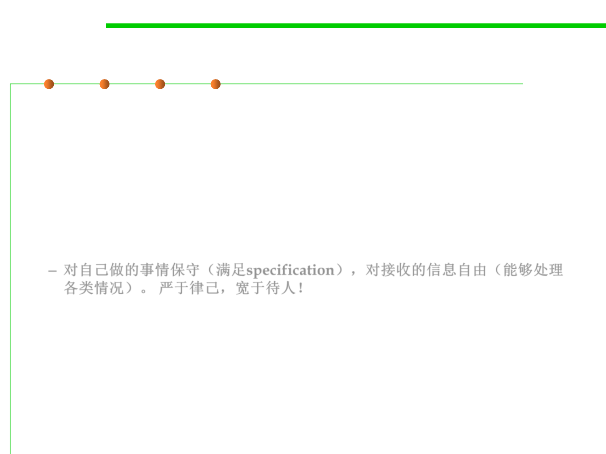

7.1 Robustness & Correctness
Robustness principle (Postel’s Law)
▪ Robustness principle (Postel’s Law):
– Be conservative in what you do; be liberal in what you accept from others.
– “Be conservative in what you send, be liberal in what you accept”
– In other words, programs that send messages to other machines (or to
other programs on the same machine) should conform completely to the
specifications, but programs that receive messages should accept non-
conformant input as long as the meaning is clear.
– 对自己做的事情保守（满足specification），对接收的信息自由（能够处理
各类情况）。 严于律己，宽于待人！